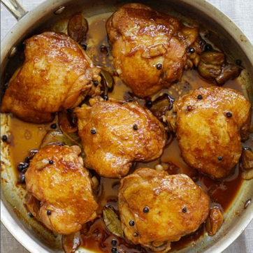

Chicken Adobo

Ingredients:
- 2 lbs chicken, cut into serving pieces
- 1 cup soy sauce
- 1 cup vinegar
- 4 cloves garlic, minced
- 1 onion, sliced
- 1 teaspoon peppercorns
- 2 bay leaves
- 1 cup water
Procedure:
- In a bowl, combine soy sauce, vinegar, garlic, onion, peppercorns, and bay leaves.
- Add the chicken pieces and marinate for at least 30 minutes.
- Heat oil in a pan and sauté the marinated chicken until brown.
- Pour in the marinade and water. Simmer until the chicken is cooked and the sauce thickens.
- Serve hot and enjoy your Chicken Adobo!